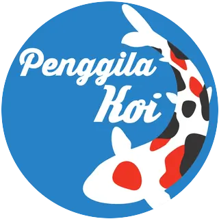

FOTO BREEDER / FARM
BREEDER JEPANG
Profil breeder
Foto, nama farm, lokasi, dan lini Nijikawa yang digunakan akan ditampilkan di sini.
PROFIL SEGERA DITAMBAHKAN
PENGGILA KOINIJIKAWA INDONESIAPREMIUM KOI FEED
Kenali Nijikawa dan pilihan pakannya untuk kebutuhan koi Paman—dari pertumbuhan hingga perawatan sehari-hari.

KEPERCAYAAN DARI JEPANG
Nijikawa telah digunakan oleh berbagai breeder di Jepang. Kenali mereka melalui profil, foto, dan cerita penggunaan Nijikawa di farm masing-masing.
Foto, nama farm, lokasi, dan lini Nijikawa yang digunakan akan ditampilkan di sini.
PROFIL SEGERA DITAMBAHKANFoto, nama farm, lokasi, dan lini Nijikawa yang digunakan akan ditampilkan di sini.
PROFIL SEGERA DITAMBAHKANFoto, nama farm, lokasi, dan lini Nijikawa yang digunakan akan ditampilkan di sini.
PROFIL SEGERA DITAMBAHKANProfil dan foto breeder akan dilengkapi berdasarkan materi yang disetujui untuk ditampilkan.
PENDEKATAN NIJIKAWA
Materi Nijikawa USA menyebut pengembangan bersama EWOS Canada serta kegiatan riset dan pengembangan di farm koi. Pendekatan formulanya mencakup nutrisi, pencernaan, kondisi kulit, dan ketahanan pelet di air.
Profil asam amino esensial dan rasio protein-lemak dirancang untuk mendukung fungsi tubuh, energi, pembentukan otot, dan konformasi koi.
Prebiosal dan probiotik mendukung lingkungan usus, sementara bahan yang mudah dicerna membantu pemanfaatan nutrisi dan mengurangi sisa pakan.
Expanded Pellet Technology (EPT) membantu pelet lebih tahan di air. Tujuannya menjaga pakan tetap utuh lebih lama dan mendukung kejernihan air.
Nukleotida, vitamin C, E, B12 yang distabilkan, serta campuran vitamin dan mineral melengkapi kebutuhan nutrisi koi.
Nijikawa USA menyatakan lini pakannya menggunakan bahan NON-GMO serta tidak memakai protein gluten kedelai atau jagung.
Informasi kemitraan dan klaim formula di atas dirangkum dari materi Nijikawa USA. Kesesuaian spesifikasi dan ketersediaan produk untuk Indonesia perlu dicocokkan dengan label serta materi resmi distributor.
PILIHAN NIJIKAWA
Bandingkan tujuan formula, karakter pelet, ukuran, dan analisis nutrisi. Data teknis di bawah mengikuti katalog Nijikawa USA.
UNTUK PERTUMBUHAN DAN KONFORMASI
Growth dirancang untuk mendukung pertumbuhan koi dengan matriks asam amino dan rasio energi-protein yang seimbang.
5 mm: 7 kg dan 18 kg. 7 mm: 18 kg. Fosfor minimum 1,1%; natrium maksimum 0,5%. Bahan utama yang tercantum meliputi fish meal, poultry meal, gandum, kacang polong, dried beans, fish oil, premiks vitamin-mineral, asam amino, yeast extract, dan astaxanthin.
UNTUK PEMBERIAN PAKAN TENGGELAM
Professional menggunakan pelet tenggelam dengan formula nutrisi yang menekankan keseimbangan energi-protein, kualitas tubuh, dan daya cerna.
Ukuran 5 mm dan 7 mm tersedia dalam kemasan 10 kg dan 20 kg pada katalog USA. Fosfor 1,1%; natrium maksimum 0,5%. Bahan utama yang tercantum meliputi fish meal, gandum, poultry meal, kacang polong, dried beans, fish oil, premiks vitamin-mineral, yeast extract, asam amino, dan astaxanthin.
UNTUK DUKUNGAN WARNA DAN KUALITAS KULIT
Dikembangkan berdasarkan pendekatan nutrisi untuk mendukung warna alami koi dan kualitas kulitnya—tanpa menjanjikan perubahan warna yang sama pada setiap ikan.
Tenggelam 5 mm: 10 kg dan 20 kg. Apung 7 mm: 18 kg pada katalog USA. Fosfor 1,1%; natrium maksimum 0,5%. Bahan utama yang tercantum meliputi gandum, fish meal, poultry meal, kacang polong, dried beans, fish oil, premiks vitamin-mineral, yeast extract, asam amino, dan astaxanthin.
Spesifikasi, ukuran kemasan, dan komposisi diambil dari halaman produk Nijikawa USA. Mohon cocokkan dengan label produk yang beredar di Indonesia sebelum menggunakan informasi ini sebagai acuan pembelian.
PANDUAN MEMILIH
Pakan adalah satu bagian dari pemeliharaan. Pertimbangkan juga kondisi koi, suhu, kualitas air, dan kemampuan filtrasi kolam.
Pertumbuhan, pemeliharaan rutin, atau perhatian pada penampilan koi.
Sesuaikan pemberian pakan dengan suhu, kualitas air, dan respons koi.
Gunakan panduan pada kemasan dan tanyakan ketersediaan produk resmi.
NIJIKAWA INDONESIA
Hubungi kanal Penggila Koi untuk bertanya tentang lini Nijikawa dan informasi penjual di Indonesia.